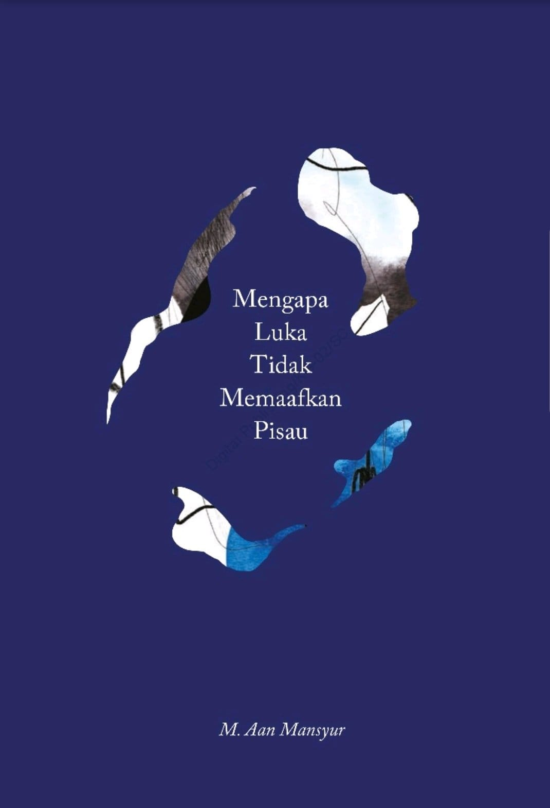

Menilik Rangkaian Aksara, M. Aan Mansyur : "Mengapa Luka Tidak Memaafkan Pisau"

“apakah kegelapan adalah kebenaran bagi malam?
apakah cahaya adalah kebenaran bagi siang? apakah
pada pagi yang tipis dan tergesa, bersama mimpi
buruk siang yang belum usai & penat panjang malam,
dua kebenaran akan bertemu & berseteru?”
03.15, Di Kamar 242 Hotel Melia Purosani
Puisi di atas merupakan salah satu penggalan puisi dalam buku “Mengapa Luka Tidak Memaafkan Pisau” karya Martan Mansyur atau yang lebih dikenal dengan M. Aan Mansyur. Aan Mansyur lahir di Bone, Sulawesi Selatan pada 14 Januari 1982. Ia merupakan pustakawan di Katakerja, sebuah ruang sosial dan ruang kreatif di Makassar. Terdapat beberapa karya Aan Mansyur yang telah terbit diantaranya adalah “Aku Hendak Pindah Rumah (2008)” , “Kukila (2012)” , “Melihat Api Bekerja (2015)”, “Tidak Ada New York Hari Ini (2016)”, “Cinta Yang Marah (2017)”, dan “Mengapa Luka Tidak Memaafkan Pisau (2020)”.
Pada buku karya Aan Mansyur yang berjudul Mengapa Luka Tidak Memaafkan Pisau ini, terdapat empat puluh satu puisi yang terbagi dalam lima bagian. Selain pemilihan diksi yang apik, ilustrasi buku ini terlihat sangat menarik dan mendukung suasana dari rangkaian kata yang menyusun puisi - puisi dalam buku ini.
Secara umum, tema yang diangkat pada puisi - puisi ini mencakup fenomena - fenomena umum yang cukup relate dengan keadaan saat ini. Romansa keluarga, pertanyaan, kebingungan, kehilangan, hingga sosial dan politik menjadi penyusun yang kental pada tiap puisi yang dimuat dalam buku ini. Keseluruhannya, buku ini dikemas secara apik dan artistik, baik dari segi penyusunan kata hingga lahir puisi maupun pemilihan warna dan ilustrasi yang mengiringi tiap puisi.
“di belakang bising kata - kata
ada ruang
lapang yang lengang.
kekosongan yang tidak mampu dikatakan kata.
kesana
kau datang
berteriak (berteriak hingga kau adalah suaramu)
meluapkan air mata
melupakan air mata
menerima
menertawai
merawat
melayat
diri sendiri."